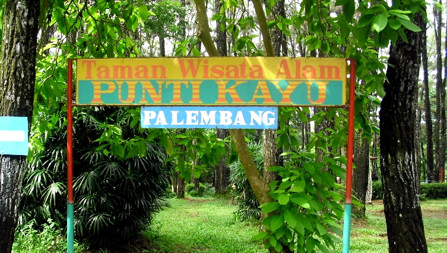

Taman Miniatur
Taman yang menampilkan miniatur bangunan, monumen, atau elemen alam yang menghasilkan keindahan sehingga dapat dinikmati oleh pengunjung.
Taman Burung
Taman burung yang menjadi tempat wisata edukasi di mana pengunjung dapat mengamati berbagai spesies burung.
Rumah Hobbit
Pantai yang menakjubkan dengan pasir putih dan laut biru yang jernih.
Jam Operasional
Hari kerja (Senin-Jum'at) jam 09.00 s/d 16.00
Hari Libur (Sabtu-Minggu) jam 09.00 s/d 17.00
